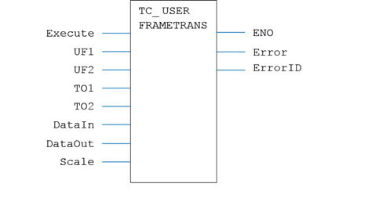
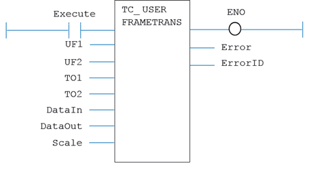

Motion Function
Executes a single USER_FRAME_TRANS on the specified table data.
|
EN : BOOL; |
Set TRUE to enable the function |
|
UF1 : USINT; |
User Frame In; The USER_FRAME identity that the points are supplied in |
|
UF2 : USINT; |
User Frame Out; The USER_FRAME identity that the points are transformed to |
|
TO1 : USINT; |
Tool Offset In; The TOOL_OFFSET identity that the points are supplied in |
|
TO2 : USINT; |
Tool Offset Out; The TOOL_OFFSET identity that the points are transformed to |
|
DataIn : DINT; |
The table index for the input positions |
|
DataOut : LINT; |
The table index for the start of the generated positions |
|
Scale : LREAL; |
Scale factor for the table values (default 1000) |
|
ENO : BOOL; |
TRUE if function is enabled |
|
Error : BOOL; |
TRUE if a program error is detected |
|
ErrorID : UINT; |
Returned error number |
When the EN input is TRUE, the function block applies the command.
A programming error, such as parameter out of range, will set the Error output and return an error ID number. For the Error ID reference, see the Trio Programming error list.
MyTC_UserFrameTrans(EN, UF1, UF2, TO1, TO2, DataIn, DataOut, Scale);
ENO := MyTC_UserFrameTrans.ENO;
Error := MyTC_UserFrameTrans.Error;
ErrorID := MyTC_UserFrameTrans.ErrorID;

